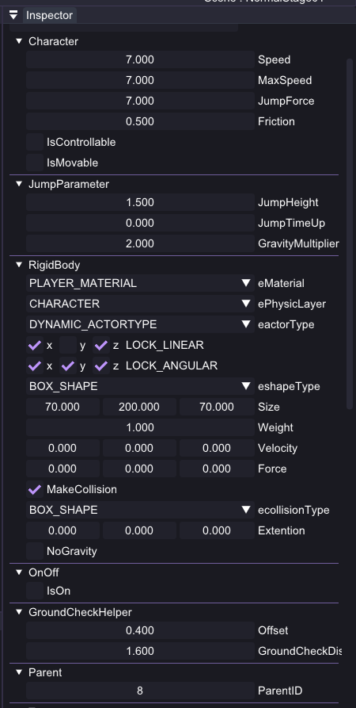
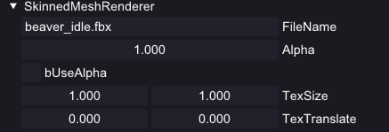
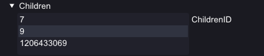
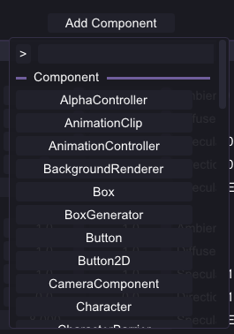
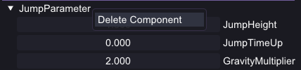
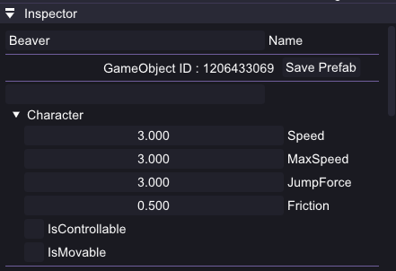

TicToc
Guardians
세 번째로 만든 자체 엔진입니다. ECS라는 개념을 이때 처음 접했고, 자료를 찾아보고 팀원들과 이야기해 가며 컴포넌트 풀과 리플렉션, 직렬화를 직접 만들어 봤습니다. 에디터를 붙인 것도 이 프로젝트가 처음이었습니다. 게임 쪽에서는 매 프레임의 입력을 비트셋으로 남겨, 앞 순서 캐릭터가 고스트로 같은 행동을 반복하게 했습니다.
엔진 설계
ECS와 툴, 런타임 리플렉션을 직접 만들어 보는 것이 이 엔진의 목표였습니다. 사용자 코드(User LIB)를 코어에서 떼어내고 에디터와 런처를 각각의 실행 파일로 나눠, 실행 파일마다 필요한 코드만 들어가게 했습니다.
창은 IWindow::OnImGuiRender() 하나만 구현하면 되도록 통일했습니다
풀을 고정 배열로 잡아 데이터를 붙여 두고, 풀을 늘려도 주소가 바뀌지 않도록 list로 관리했습니다
로드 시점에 정적으로 등록해 두고 런타임에는 이름으로 찾습니다. 인스펙터와 직렬화가 같은 메타를 씁니다
기능
인스펙터와 리플렉션
등록된 속성의 타입을 보고 Drag, Checkbox, Combo, ListBox를 알아서 붙이는 ImGui 인스펙터
값 하나 바꾸려고 코드를 고치고 다시 빌드하던 상황이라, 기획이 손댈 수가 없었음
등록 매크로만 써 두면 인스펙터에 뜹니다. 기획이 값을 직접 만졌습니다


std::string은 입력 필드로 그려집니다.
std::vector는 항목을 늘리고 줄일 수 있는 목록으로 그렸습니다. 열거형, 쿼터니언, 직접 만든 구조체도 드로어를 따로 뒀습니다.struct IWindow
{
virtual ~IWindow() = default;
virtual void OnImGuiRender() = 0; // 매 프레임 호출
};
// 멤버 포인터를 캡슐화해 인스턴스에서 직접 읽고 쓴다
PropertyHandler<Character, float> speed{&Character::Speed};
프로세스는 등록된 IWindow의 렌더 함수를 돌리기만 하고, 창은 각자 필요한 것을 그립니다. 인스펙터는 그 안에서 Property 목록을 훑어 위젯을 만들고 Get/Set을 연결합니다.
등록을 빠뜨려도 컴파일은 그대로 통과해서, 실행해 보고 나서야 속성이 없다는 것을 알게 됩니다. 결국 매크로를 잘 쓰자는 약속에 기대는 구조였고, 지원하는 컨테이너도 std::vector 정도가 전부였습니다. 다음 엔진에서 이 부분을 다시 짰습니다.
컴포넌트 조립과 프리팹 저장
검색 팝업으로 컴포넌트를 붙이고, 완성된 오브젝트를 자식 계층까지 .prefab으로 저장
캐릭터 하나에 컴포넌트와 자식이 십수 개라, 매번 손으로 다시 조립할 수는 없었음
씬과 프리팹이 파일로 남아 빌드 없이 레벨을 구성하고 공유



void SerializeSystem::SerializePrefabRecursive(
uint32_t id, nlohmann::json& out, bool isTop)
{
auto components = m_GameObjectManager
->GetAttachedComponents(id);
for (auto cp : *components | std::views::values)
cp->SerializeThis(attached); // 매크로가 만든 가상 함수
if (const auto children =
m_GameObjectManager->QueryComponent<Children>(id))
for (auto child : children->ChildrenID)
SerializePrefabRecursive(child, out, false); // 반복
}
시작점의 오브젝트 ID를 받아 붙어 있는 컴포넌트를 차례로 직렬화하고, Children 컴포넌트가 있으면 같은 함수를 자식에게 다시 부릅니다. 컴포넌트마다 저장 코드를 따로 쓰지 않고 리플렉션 등록부에서 만들어진 가상 함수를 그대로 씁니다.
저장된 GameObjectId가 불러올 때의 ID와 같을 수 없어, 부모–자식 관계가 어긋났습니다. 불러오는 시점에 ID를 새로 발급하고 대응표로 관계를 다시 잇는 방식으로 정리했습니다.
캐릭터 시스템
입력을 프레임 단위 8비트 비트셋으로 표준화하고, 아이소메트릭 축에 맞춰 이동·점프를 수행
고스트가 과거를 그대로 재현하려면, 조작부터 기록할 수 있는 형태여야 했음
동시 입력을 잃지 않고 한 프레임 1바이트로 보존 — 조작과 재생이 같은 코드

// 1) 입력 → 비트셋 (LEFT/RIGHT/UP/DOWN/JUMP/BOX/SKIP) Bitset8 b = SampleInput(); // 2) 이동 벡터 합성 & 적용 vec3 dir = IsoCompose(b); ApplyKinematicMove(Normalize(dir), speed, dt); // 3) 이벤트성 액션 if (b[JUMP]) OnJump(characterId); if (b[BOX]) OnSpawnBox(characterId); // 4) 트레이스 송신 — 리플레이어가 받는다 Publish("OnTraceDirection", {characterId, b});
IsControllable / IsMovable / IsJumpAble / JumpCooldown으로 입력을 받을 수 있는 시점과 행동 제약을 상태로 분리해, 조작·재생·정지가 같은 함수를 공유합니다.
리플레이(고스트 플레이어) 시스템
프레임별 입력 트레이스를 저장했다가, 시작 상태로 되감은 뒤 그대로 다시 주입해 재생
혼자서 협동 퍼즐을 푸는 게임이라, 앞 순서 캐릭터가 만들어 둔 상황이 그대로 남아야 했음
위치가 아니라 입력을 기록해, 물리와 상호작용까지 매번 동일하게 재현
// 기록 if (IsTracing) { Tracer[TraceIndex++] = incomingBitset; if (TraceIndex == TraceSize) FinishTracing(); } // 재생 — 조작과 동일한 합성 로직을 탄다 if (IsReplaying) { const auto& b = Tracer[ReplayIndex++]; vec3 dir = IsoCompose(b); ApplyKinematicMove(Normalize(dir), speed, dt); if (b[JUMP]) Publish("OnJump", characterId); if (b[BOX]) Publish("OnSpawnBox", characterId); if (b[SKIP]) IsWaiting = true; }
재생을 시작할 때 StartPosition / StartRotation으로 시작 상태까지 되감습니다. 액션은 전부 이벤트로 넘겼기 때문에, 더블 점프나 레버 같은 걸 나중에 붙여도 리플레이 쪽은 건드리지 않았습니다.
[스테이지 시작] ↓ [캐릭터 #1 조작] Tracing ON └ 매 틱: 비트셋 생성 → 이동 → OnTraceDirection └ 종료(클리어 / 스킵 / 타임업) → OnFinishTracing ↓ [#1 리플레이 시작] 되감기 → Replaying ON [캐릭터 #2 조작] Tracing ON └ #1은 고스트로 환경을 보조(버튼 / 상자 / 리프트) ↓ [#1 + #2 리플레이] + [캐릭터 #3 조작] … ↓ [전원 재생 완료 ⇒ 퍼즐 클리어 판정]
OnStartMoving 조작 시작 · 기록 준비OnTraceDirection 캐릭터 → 리플레이어OnFinishTracing 기록 종료 · 조작 불가화OnStartReplay 되감기 후 재생 시작OnJump / OnSpawnBox 리플레이어 → 월드같은 입력을 넣어도 시작 위치가 조금만 어긋나면 뒤로 갈수록 궤적이 크게 벌어졌습니다. 재생 직전에 기준 트랜스폼을 강제로 맞춰 두는 것으로 정리했습니다.
랜딩 포인트
캐릭터가 트리거에 도달하면 그 위치를 다음 캐릭터의 시작점으로 삼는 체크포인트입니다. 퍼즐을 앞으로 밀어 주는 장치라서, 씬 안에서 유효한 시작점이 항상 하나만 남도록 관리해야 했습니다.
회고
리플렉션과 직렬화를 처음 넣어 씬과 프리팹을 파일로 남길 수 있게 됐고, 그때부터 기획이 빌드 없이 레벨을 만들었습니다.
입력을 비트셋으로 통일해 둔 덕에 조작과 리플레이가 같은 코드를 씁니다.
컴포넌트에 가상 함수를 그대로 두고, 비슷한 컴포넌트끼리 멤버도 겹쳤습니다. ECS로 옮긴 이유가 무색해진 부분입니다.
인스펙터가 부족해 파일명처럼 직접 타이핑해야 하는 값이 많았고, 오타 하나로 시간을 날린 적도 있습니다.
상속 대신 조합으로 컴포넌트를 쪼개 중복을 없애고, 데이터만 남은 컴포넌트를 시스템이 처리하게 하는 방향.
리플렉션도 직접 만든 매크로보다 이미 검증된 것을 쓰는 편이 낫다고 봤고, 다음 엔진에서 실제로 그렇게 했습니다. Midnight Cleanup 보기